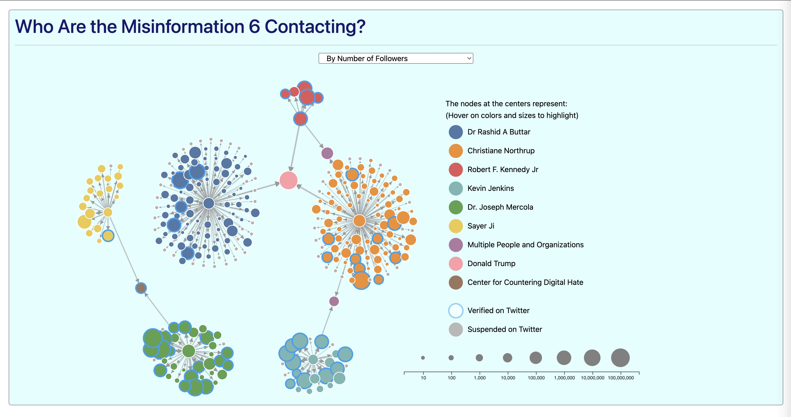
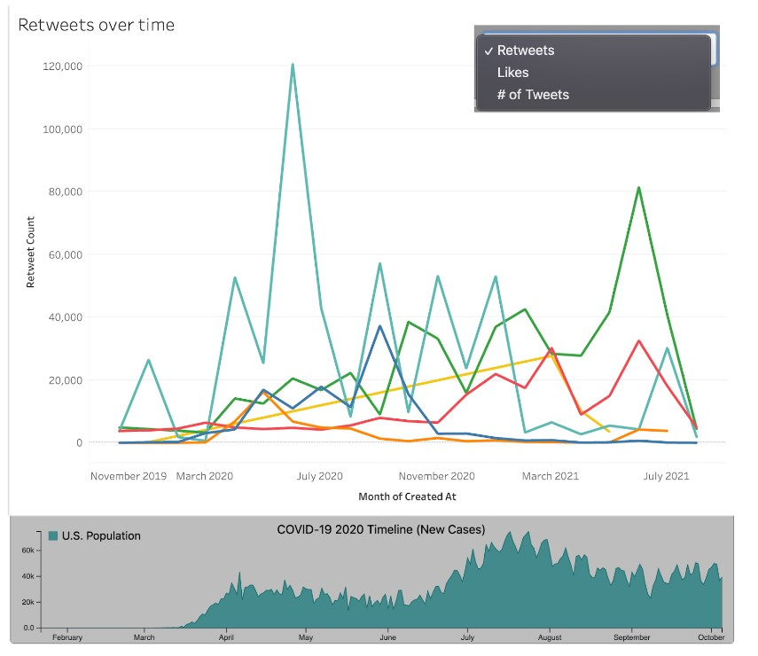

Fantastic News and How to Fake Them
Fake News: The Danger is Out there, Are You Prepared?
Fake News is everywhere, and it only takes as few as half a dozen people to create a deep network of lies
Description Force-directed graph illustrating the connections in retweets from the "Misinformation Half Dozen Dataset". RA report from the Center for Countering Digital Hate showed that 65% of anti-vaccine misinformation can be traced to just twelve people. We managed to scrape information related to six of those that were not banned from Twitter. Each node will be hoverable on and will display basic information about the Twitter accounts relative to covid-19 misinformation.
You've met the perpetrators, but what do they talk about?
A small number of people can change a nation's perspective on healthcare, at the cost of lives.

Description Static word cloud visualization of the content discussed by the perpetrators above.
This is terrible! How long have people been doing this??
From a few people on the internet to mainstream media outlets, fake news are a tale as old as time.
Tale as old as time, fake as it can be
But first, a word from our sponsors
Recommended for You

realcashcrypto.com
Banks don't want you to know this! Local Entrepreneur makes fortune with crazy investment!

notahealthscam.net
Lose weight while sleeping with this one weird trick!

instantbrainboost.net
The pill all billionaires take every morning now approved by the FDA.
Did you know that...
...you can click on the images to get new facts on fake news?
Don't worry, these images are perfectly safe (and fun) to click on.
What do they want to do with their lies?
People will lie for all sorts of reasons.
Misinformation Over Time
How metrics changed over 2020 for COVID-19
So fake news are older than sliced bread, so what's this buzz about them now? Why should you care?
Misinformation is used for personal profit. Misinformation shakes democracies. Misinformation Kills.
Description Two stacked graphs showing the relationship between retweets of the Misinformation Half Dozen and COVID-19 deaths. Hovering on any of the line charts will show the deaths for that period and the number of tweets, retweets, likes. Brushing/Zooming may be included but are not a priority to drive the point that we are trying to make.
The good news: You can protect yourself from misinformation.
Misinformation is everywhere and comes in various forms. But you can prepare against it.

Description A graph in an arc-like shape with subdivisions in different colors. At the middle of the graph, there will be a question that was asked to one of the credibility raters in our credibility dataset about the headline displayed at the middle of the arc. The user will interact with the viz by clicking on the alternative that he thinks is best descriptive of the headline (is it very clickbaity or not at all?) When the choice is made, another arrow will indicate if the original rater agrees with the user's choice or not about that news headline.
- Example of interaction:
- Pick a random headline from dataset (fictitious one) Headline: "Doom approaches as new law axes environmental budget"
- Have the user choose if they find the language "Extremely Negative", "Somewhat Negative", "Neither Negative Nor Positive", "Somewhat Positive", "Extremely Positive".
- Show the original response for that question from the original rater.
You've had your warmup, can you handle them all now?
Explore lots of ways fake news present themselves and see if you ever fell for one of them

Description A mockup of a fake news website, with several points with fake news, such as a misleading title, subtitle, link, textual content. Hovering over parts with different fake news the page will outline that area with a circle/rectangle/suitable shape and display a tooltip with tips on how to deal with that form of fake news. Over time all of the areas will be highlighted on their own so the viewer does not miss any of them.